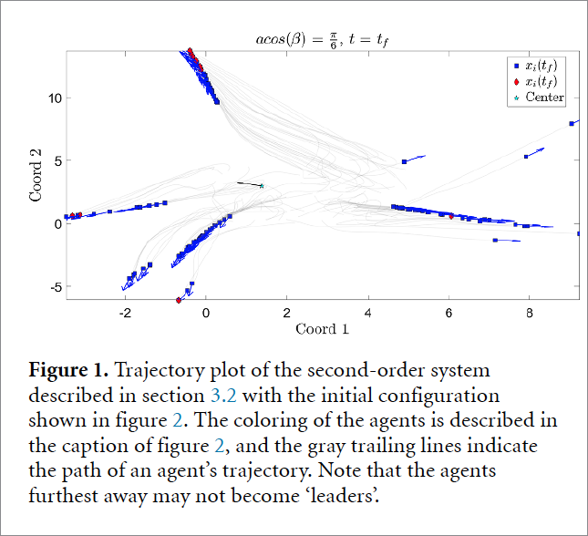
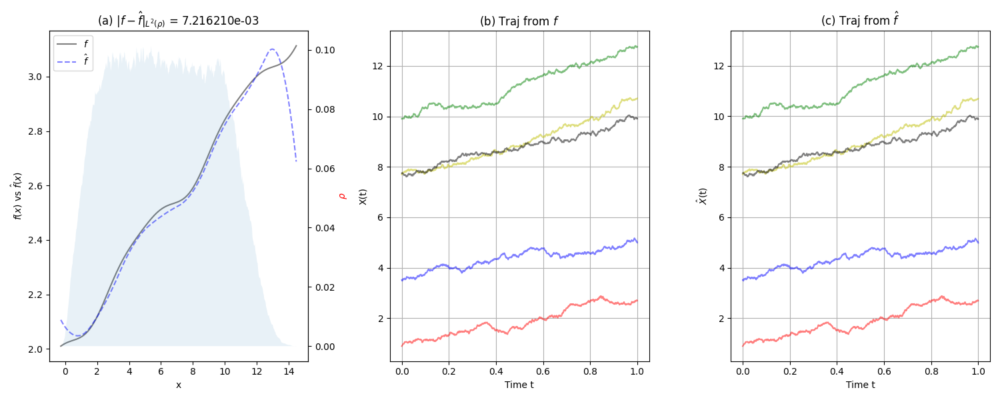
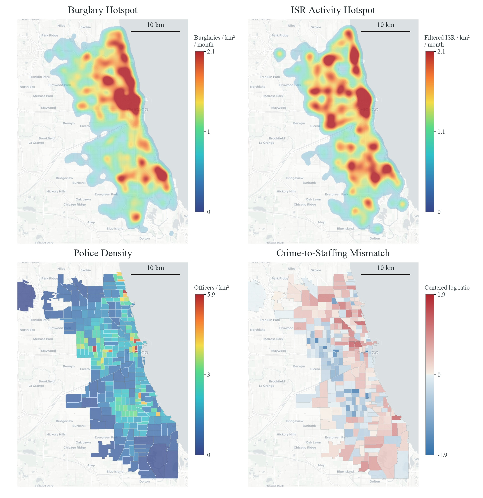
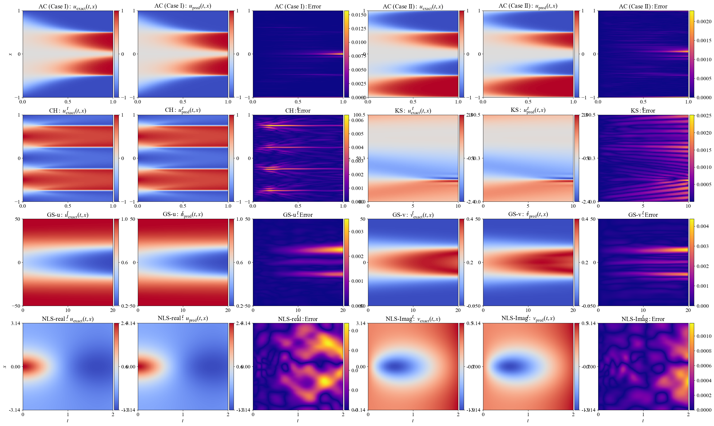
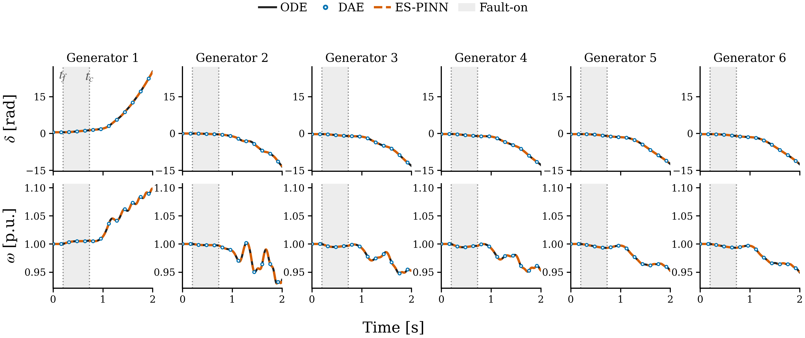
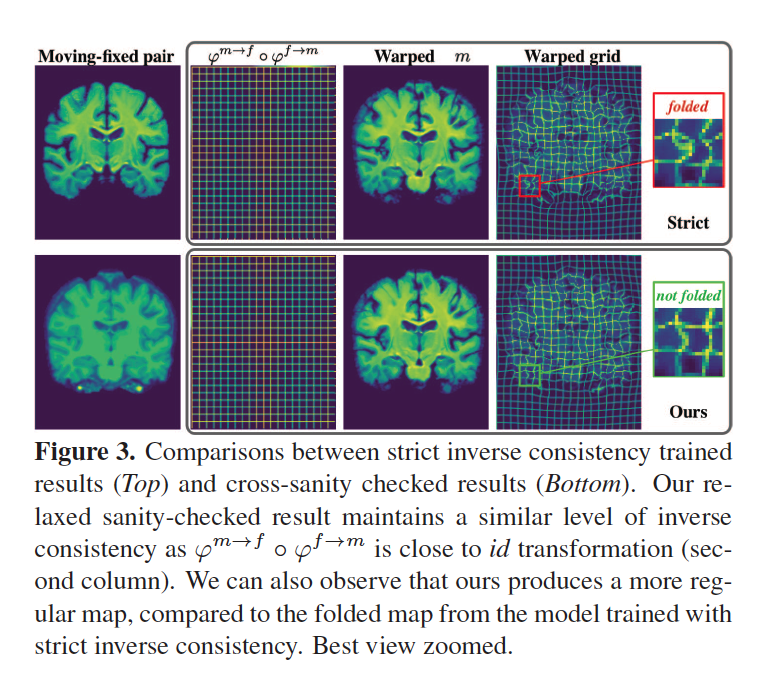
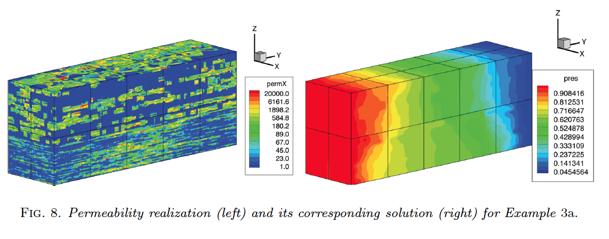

I study a wide range of problems in applied and computational mathematics, motivated by a common question: what governing structures generate the data we observe?
Answering this question requires ideas from scientific computing, numerical methods for ordinary and partial differential equations, dynamical systems, machine learning, probability, and statistics. Across applications, I combine mathematical modeling with structure-aware learning to identify mechanisms, quantify uncertainty, and build reliable computational methods from complex, noisy, or incomplete observations.
Research chapter 01
Understanding Collective Behavior
Collective behavior arises in interacting-particle and agent-based systems when a global pattern - or self-organization - emerges from local, often pairwise, interactions. It is ubiquitous in natural and societal phenomena, including clustering, flocking, milling, swarming, and synchronization. We study collective behavior from two complementary perspectives: learning interaction or communication kernels from data, and designing classes of interaction kernels that induce particular collective behaviors.
Learning from observation
Learning Interaction Kernels
Inferring interaction kernels from observations of dynamical systems in which collective behavior emerges is a challenging inverse problem. Our work began with a variational approach for basic first- and second-order systems. The framework has since grown to learn dynamics on manifolds, higher-dimensional interaction kernels with or without known interaction variables, environmental forces, and governing laws encoded by collective steady-state patterns.
Fish milling. Comparison of collective dynamics generated by the true and learned interaction laws.Swarmalator dynamics. Collective spatial organization coupled with phase synchronization.
Representative papers
Learning Interaction Kernels from Collective Steady States, arxiv, 2026.
Simultaneous Inference of Environmental and Interaction Forces in Collective Dynamics, arxiv, 2026.
Unified Learning of the Profile Function in Discrete Keller-Segel Models, ACES, 2026.
Learning Collective Behaviors from Observation, Explorations in the Mathematics of Data Science, 2024.
Learning Interaction Variables and Kernels from Observations of Agent-Based Systems, MTNS, 2022.
Machine Learning for Discovering Effective Interaction Kernels Between Celestial Bodies from Ephemerides, arxiv, 2021.
Learning Interaction Kernels for Agent Systems on Riemannian Manifolds, ICML, 2021
Learning Theory for Inferring Interaction Kernels in Second-Order Interacting Agent Systems, Sampl. Theory Signal Process. Data Anal., 2023.
Data-Driven Discovery of Emergent Behaviors in Collective Dynamics, Physica D, 2020.
Nonparametric Inference of Interaction Laws in Systems of Agents from Trajectory Data, PNAS, 2019.
Forward approaches
Modeling Collective Behavior
To expand the range of systems that can ultimately be learned from data, we also study the forward modeling of collective dynamics. These models broaden the possible equation forms for interacting-agent systems and create opportunities to develop new structure-aware learning methods.

Cucker-Smale with an Emergency of Hierarchy.
Representative papers
Attractive and Repulsive Interactions in the One-Dimensional Swarmalator Model, Physical Review E, 2023.
The Emergence of Lines of Hierarchy in Collective Motion of Biological Systems, Physical Biology, 2023.
Concurrent Emergence of Clustering, Flocking and Synchronization in Systems of Interacting Agents, arxiv, 2023.
Research chapter 02
Learning from Dynamical Data with Stochastic Noise
Stochasticity is unavoidable in scientific data. It may arise through observation noise, model error, unresolved scales, or incomplete observation. We develop methods that recover a complete picture of stochastic dynamics - including SDE and SPDE models - without assuming in advance that the underlying data-generating system is stochastic.
Our methods distinguish drift, diffusion, and reaction effects and determine which mechanisms are supported by the observations. The long-term goal is an integrated learning framework that can take time-series data from an unknown dynamical system and determine whether its governing dynamics are deterministic or stochastic, then identify the appropriate structure.

A learned drift function and trajectories from the true and inferred stochastic dynamical systems.
Representative papers
Learning Stochastic Dynamical Systems with Structured Noise, arxiv, 2025.
Noise-Aware System Identification for High-Dimensional Stochastic Dynamics, arxiv, 2024.
Learning Stochastic Dynamics from Data, ICLR Workshop, 2024.
Research chapter 03
Crime Modeling
Modeling criminal activity - residential burglary in particular - is a challenging multiscale problem. We begin with an interacting-agent system containing three components: the static attractiveness of individual houses, moving criminal agents, and moving police agents whose perception of attractiveness is delayed.
By letting the spatial grid size and time step approach zero while preserving the appropriate scale ratios, we derive a continuum limit consisting of Keller-Segel-type PDEs coupled to a delay-like ODE. We study the analytical properties of these models and use simulation to compare policing strategies and the resulting crime-hotspot dynamics.

Empirical Hotspot of Data provided by the City of Chicago.
Representative papers
Crime Hotspot Dynamics in Residential Burglary Models with Police Response, arxiv, 2026.
A Finite Element Framework for Simulating Residential Burglary in Realistic Urban Geometries, M3AS, 2026.
Research chapter 04
Physics-Informed Machine Learning
Scientific machine learning combines machine learning with the structure, algorithms, and error-aware perspective of scientific computing and numerical analysis. We develop methods that make physics-informed learning more stable, efficient, and interpretable across challenging ODE/PDE driven problems.
Our work includes enhanced training strategies for physics-informed neural networks, hybrid approaches combining PINNs and physics-informed Gaussian processes, new architectures based on random-feature neural networks, and interpretable decompositions of learned PDE solutions. Applications include power systems, astrophysical radiative transfer, conservation laws, and other stiff or multiscale systems.
Methogology
PIML Training Enhancements
PIML methods (including but not limited to Physics Informed Neural Networks (PINNs), Physics Informed Gaussian Processes (PIGPs), and Physics Informed Random Feature Net) are a new bran of numerical methods for solving differential-equation driven dynamics. We provide methodology analysis on how to improve the training of these methods, especially for solving stiff PDEs and Hyperbolic PDEs.

Exact solutions, learned solutions, and error fields across several stiff PDE benchmarks.
Representative papers
Physics-Informed Random Feature Neural Networks for Solving PDEs, arxiv, 2026.
Dimension Domain Co-Decomposition: Solving PDEs with Interpretability, TMLR, 2026.
3D-PINNS: A Unified Framework for Dimension-Wise Interpretability and Adaptive Domain Decomposition, ICLR Workshop, 2026.
Stability in Training PINNs for Stiff PDEs: Why Initial Conditions Matter, FoDS, 2026.
Label Propagation for Physics-Informed Neural Networks and Physics-Informed Gaussian Processes, arxiv, 2024.
Physics-Informed Neural Networks with Adaptive Localized Artificial Viscosity, JCP, 2023.
Applications
Domain Sciences Driven PIML Methods
PIML solutions can work as excellent surrogate models and thus can speed up various science/engineering simulations. We provide PIML based surrogate modeling (including operator learning) for particular applications, such as RTE in Astrophysics, Power System Analysis, and more.

PINN Solution for a Power System with Five Generators.
SEDONA-GesaRaT: A Deep Learning Accelerated Radiative Transfer Program for 3D Supernova Simulations, ApJ, 2026.
PINNs-Based Uncertainty Quantification for Transient Stability Analysis, CEEGE, 2026.
Using Physics-Informed Neural Networks for Supernova Radiative Transfer Simulation, arxiv, 2023.
Research chapter 05
Regularization Techniques for Ill-Posed Inverse Problems
We develop regularization methods for ill-posed inverse problems arising in medical image registration, diffusion-model training, compressed sensing, deconvolution, and other signal- and image-processing applications.
Regularization introduces carefully chosen mathematical structure, controlled by a regularization parameter, to obtain stable and well-defined approximations. We study existence and uniqueness for the resulting regularized problems, along with convergence of the regularized solutions as the parameter varies.

Regularization in medical image registration: preserving consistency while avoiding folded deformation maps.
Representative papers
Noise-Based Regularized Training for Diffusion Models, MVA, 2025.
Towards Saner Deep Image Registration, ICCV, 2023.
On the Sparsity of Lasso Minimizers in Sparse Data Recovery, Constructive Approximation, 2023.
Time Relaxation with Iterative Modified Lavrentiev Regularization, arxiv, 2018.
Iterative Refinement of a Modified Lavrentiev Regularization Method for De-Convolution of the Discrete Helmholtz Type Differential Filter, arxiv, 2018.
Hierarchical Reconstruction Method for Solving Ill-Posed Linear Inverse Problems, UMD, 2016.
Research chapter 06
Large-Scale Computational Efficiency
We develop efficient numerical algorithms for large-scale computational problems whose dimension, geometry, or stochastic structure makes direct computation impractical.
Examples include reservoir simulation with spatially varying permeability and high-dimensional stochastic structure, as well as optimization methods for matrix incoherence. The aim is to preserve the essential mathematics of a problem while making its computation scalable and reliable.

A heterogeneous permeability realization and its corresponding pressure solution in stochastic porous-media flow.
Representative papers
Grassmannian Packings: Trust Region Stochastic Tuning for Matrix Incoherence, Allerton Conference, 2022.
A Stochastic Mortar Mixed Finite Element Method for Flow in Porous Media with Multiple Rock Types, SISC, 2011.